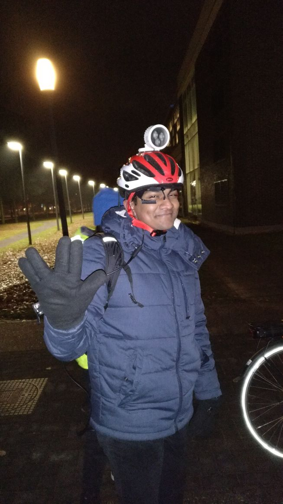

Cyclist’s Gaze Behavior Before and After Obstacle Detection
Introduction
To find solutions for the rise in bicycle accidents in The Netherlands, I collaborated with Philips Lighting on this project. My team focused on understanding gaze behaviour of cyclists in presence of obstacles on the road. We hope that results from this study will help governments to provide cyclists with better infrastructure for safe riding.
Process
Literature survey revealed most of the studies regarding cyclists were done in laboratories. To understand gaze beahviour of cyclists in real life, we decided to run the experiment in outdoor environment. The experiment was conducted at High Tech Campus Eindhoven. A total of nine participants were recruited for the study. For collecting data Pupil-labs eye tracker was used.
Participants were informed that they had to cycle two sessions, each session with different speed. In the one session participants were told that they had to cycle as fast as they could as if they had a train to catch. In the other session, they were asked to cycle at their normal speed.
A sample setup

Analysis
The video was coded frame by frame and gaze location was assigned to one of the following area of interest (AOI): on-road and off-road. Gaze percentages to the areas of interset was calulated in Excel.
Results
We found that there is no significant difference between gaze behavior before and after obstacle detected during day time. Since the data collected from night time was not good, statistical analysis was not done for the data. This chapter further discusses the reflection, limitation and suggestion for future research. We also found that participants gaze strategy differs between participants and also on speed of biking.
Limitations
Pupil-labs eye-tracker was not robust in data collection, especially in the night condition. The data collected during night was not good for analysis. Only few pupil movements were detected at night compared to daytime. This is quite a contrast to the performance of the eye-tracker under daylight conditions.
Click here to read the complete report.